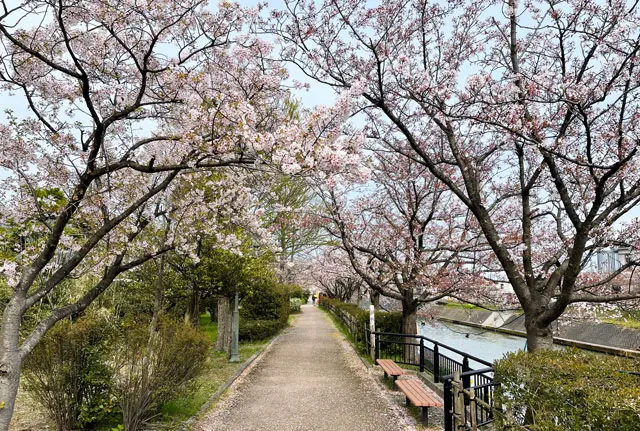
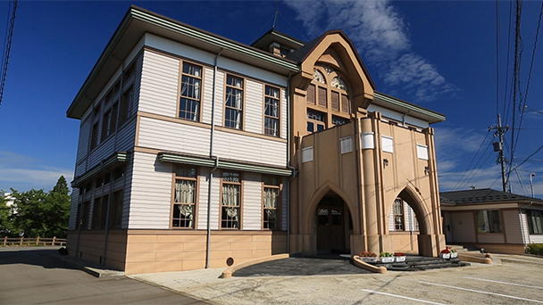
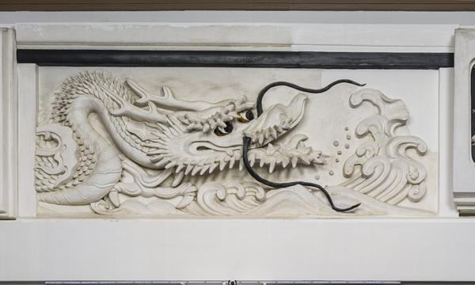

一休みスポット
下条川千本桜
祭り会場の未開側にある桜並木がきれいな道です。
道には多数のベンチも用意されているので祭りの風景を眺めながら休むことができます。
秋という事もあって残念ながら桜は咲いていないのですが、赤やオレンジ色に染まった葉を見るのもなかなか乙なものですよ。
↑↑ここをクリック↑↑

竹内源造記念館
北陸を中心に活躍した左官工、竹内源造の記念館です。
鏝絵が展示してあり、現代の左官工の方にもセンスと技術がすごすぎると絶賛されています。
祭りのにぎやかな雰囲気に疲れたら寄って見てはいかがでしょうか。
↑↑ここをクリック↑↑

映えスポット
鏝絵
竹内源造記念館の中にある国内最大級の鏝絵です。
今にも飛び出してくるのでは無いかと錯覚するぐらいの迫力があります。
これでインスタ映えも間違いなし
